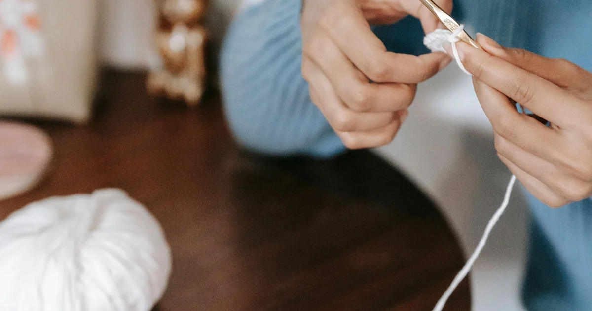
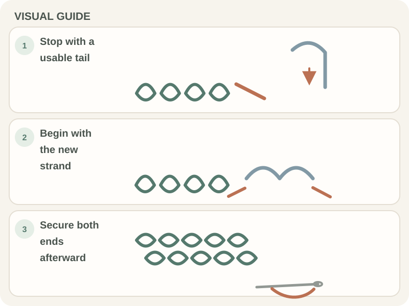

Stitches & Techniques · Beginner guide
How to Join New Yarn in Crochet
Add a new strand at a pattern-approved point and secure the ends without creating a bulky knot.

A yarn join must hold while matching the fabric’s tension. No single join works best for every yarn, stitch pattern, and location.
Before you begin
Check whether the pattern specifies a join. When practical, avoid placing it in a highly visible or heavily stressed area.
Step-by-step instructions
- Leave a tail on the old strand long enough to weave in, unless the specified join uses it differently.
- Begin the new strand where the pattern recommends; some methods complete a stitch with the new yarn.
- Work a few stitches and check tension before trimming anything. Both strands should lie flat.
- Secure the tails using a method suited to the fiber and fabric, weaving each in through several stitches.

What to check
Choose the join for the fabric
Gently flex the area. It should not open into a hole or form a hard lump. If conspicuous, undo the join and move it rather than hiding a bulky knot.
Frequently asked questions
Can I tie the ends together?
A knot can create a lump and may not suit every fiber or project. Follow the pattern’s join method and secure the tails.
Where should I join a new skein?
Use the pattern’s guidance. Otherwise, choose a less visible point when the construction allows it.
Can I join yarn in the middle of a row?
Use the pattern’s instructions. If no location is specified, consider visibility and fabric stability, then test the join before continuing.
Is a knotless join always secure?
No single join suits every yarn and project. Use the pattern’s method, leave tails to secure when required, and test the area before trimming.
Choose a joining point that fits the construction
A new skein can be joined at an edge, seam, color boundary, or another location named in the pattern. A visible motif center or highly stretched area may make a join easier to notice. When the pattern gives no location, choose a stable spot where the join can be finished and hidden within the fabric, if the construction allows it. Avoid trimming old or new tails until you have checked the join and know how they will be secured.
Match the join to the fiber and fabric
Some methods rely on the yarn holding a splice; others use the hook to attach the new strand or leave tails to weave in. A method that works for a feltable fiber may not hold the same way in a smooth synthetic yarn. Thick joins can also show in fine stitches, and loose joins can open in a stretched fabric. Follow the pattern’s method where specified. Otherwise, test the chosen join on a swatch and gently flex it before using it in a visible section.
Prepare both tails before continuing
Leave enough yarn on the old and new strands for the securing method you plan to use. The needed length depends on yarn thickness, needle, stitch scale, and the finishing route, so follow the pattern or test on a swatch rather than using a fixed universal measure. Keep the tails out of the active stitch path while crocheting, then weave or secure them as the method requires. Do not cut either tail until the join holds and the fabric lies flat.
Check the join under the project’s normal movement
Inspect both sides for a hole, lump, color change, or loose loop. Gently stretch or flex the fabric in the direction it will be used; a join can look secure while flat but open when the fabric moves. If it shifts, undo it and choose a pattern-approved alternative or a less visible, more stable spot. Fibers behave differently, so a small test is especially useful when changing yarn type or joining near a seam.
A join should suit where the project is handled
A join near a seam or edge may be easier to hide, but it still needs to withstand how the item will be stretched or washed. A join in an exposed center can be more noticeable, while one in an open stitch may leave a gap. Consider both visibility and use, then test the method on a small piece of the same yarn and stitch pattern. Check the finished sample from the front and reverse and flex it gently before using the method on the project.
Common mistakes and how to fix them
- Trimming tails before checking the join. The join may loosen and leave too little yarn to secure. Test the stitches and finish both tails first.
- Using a bulky knot in a fine fabric. The lump may show or change the drape. Choose a method suitable for the yarn and stitch scale.
- Assuming a splice works for every fiber. Some joins depend on fiber properties. Follow the yarn and pattern guidance and test a sample.
Tips that make it easier
- Leave enough tail to use the chosen securing method; avoid guessing a universal length.
- Place a join where the pattern permits and where the fabric can hide or support it.
- Flex and inspect a small test section before trimming either strand.
A useful next step
Check the pattern’s instructions against a short sample before continuing, then follow its stated stitch and edge rules.